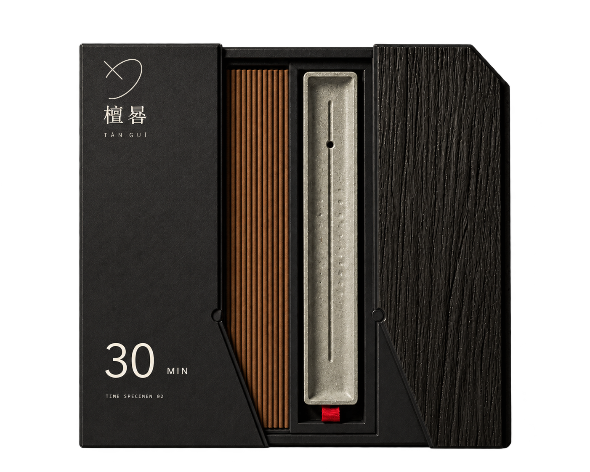

15 MIN / OPEN BOX
晨白 · 开盒全貌
原项目 v5 开盒产品图，完整保留香盒、香支与香托的位置关系。
香事画册 / 晷墨
香盒、香支与香托

开盒全貌香盒 · 香支 · 香托
SUNDIAL INK / 30 MIN
THE THREE EDITIONS
在同一套包装结构里，
比较晨白、晷墨与檀褐的材质和颜色。
原项目 v5 开盒产品图，完整保留香盒、香支与香托的位置关系。
原项目 v5 开盒产品图，完整保留香盒、香支与香托的位置关系。
原项目 v5 开盒产品图，完整保留香盒、香支与香托的位置关系。
右上角切角对应日晷投影，日影折线成为真实开合线；木纹板向右抽离后露出细长线香和条形矿物香托。
方盒内部以圆形开窗露出器物，形成方与圆、纸与矿物的对照；右侧浅木纹板继续承担开合和触觉识别。
MATERIAL & RECORD
墨黑正面压低视觉噪声；
纵向木纹保留材料的触觉线索。
这组作品记录包装、器物与使用情境的设计。
材料档案随着原料卡、批次卡与测试记录继续补充。
晷墨 / 香事画册
墨黑纸面、木纹侧板与日影折线，将开盒、取香、安置连接成一次完整香事。三种时长，同一种从容。
檀晷 · 香盒、香支与香托